Historia del club
Nacimiento (1899-1922)
El Fútbol Club Barcelona fue fundado el 29 de noviembre de 1899 por un grupo de doce aficionados al fútbol, convocados por el suizo Hans Gamper mediante un anuncio publicado en la revista Los Deportes el 22 de octubre del mismo año. Entre los doce fundadores del club había seis españoles, tres suizos, dos ingleses y un alemán. El nombre original escogido fue «Foot-ball Club Barcelona», en inglés, y se designó al suizo Walter Wild como primer presidente del club por ser la persona de más edad de entre las presentes.
A finales de su primera década consiguió sus primeros títulos, una Copa de España y una Copa de los Pirineos.
Durante los años 1910 el club dio un gran salto, tanto deportivo como social: ganó dos Copas de España y tres Copas de los Pirineos, y llegó a los 3000 asociados, convirtiéndose ya en una de las sociedades más populares de Cataluña. En aquellos años fue cuando se popularizó el apelativo de «culés» referente a los aficionados del club. El equipo jugaba sus partidos en un campo situado en la calle Industria de Barcelona, que se llenaba masivamente cuando jugaba el Barcelona, y desde la calle se veía cómo estaban sentados en las galerías hechas de madera, de espaldas, los aficionados situados en la parte más alta del graderío. La imagen desde la calle era la de una gran cantidad de traseros (culos), por ello, a los aficionados del Barcelona se les comenzó a llamar «culés». De esa década también cabe anotar que, en 1914, el club creó su primera sección polideportiva, la de atletismo.
Primo de Rivera, República y Guerra Civil (1923-1957)
Los años 1920 pasaron a la historia como la primera época dorada del club. Se pasó de 3000 a 12 000 socios y, en 1922, se estrenó el primer gran estadio del club, el Camp de Les Corts, con capacidad para 30 000 espectadores. Fueron años en los que el club ganó cuatro Copas de España y, en 1929, la primera Liga española de la historia. También cabe anotar los incidentes acaecidos en 1925 cuando el gobierno de la dictadura de Primo de Rivera cerró el estadio de Les Corts durante seis meses y obligó a dimitir al presidente Hans Gamper a causa de los silbidos con los que la afición barcelonista recibió la interpretación de la Marcha Real en los prolegómenos de un encuentro. De esa década cabe destacar que el club avanzó en la línea de ampliar su carácter polideportivo, y creó las secciones de hockey hierba, baloncesto y rugby.

Club de Fútbol Barcelona (1957-1978)
Cabe decir que durante los casi 40 años de la dictadura en España, cuando se prohibieron y reprimieron las instituciones políticas catalanas, el club se convirtió en uno de los símbolos de la lucha anti-franquista en Cataluña y de la resistencia contra el centralismo que representaba el régimen franquista. El estadio del F. C. Barcelona se convirtió en uno de los pocos escenarios públicos donde los aficionados se expresaban libremente, y el club se convirtió en el mejor embajador de Cataluña en el exterior. Fue en aquellos años cuando se dijo que, por su simbolismo, el Barcelona era «más que un club», expresión pronunciada por el presidente Narcís de Carreras en su discurso de toma de posesión en 1968
El Equipo Catalán fue invitado de Torneo de Triangular del conjunto italiano AC Milan y un conjunto argentino Altos Hornos Zapla esos equipos en dos partidos del Triangular en la Primera Fecha jugó primero contra Altos Hornos Zapla que terminó empatados por 2-2 y quedó eliminado con la Medalla de bronce en la previa final .
Núñez y los años de estabilidad (1978-2000)
Los años 1980 fueron de grandes inversiones en el fichaje de grandes estrellas como Maradona, Schuster o Lineker, pero el equipo de fútbol sólo pudo ganar en España una liga, tres Copas del Rey, una Supercopa y dos Copas de la Liga. A nivel europeo se ganaron dos Recopas, pero se volvió a perder una final de la Copa de Europa, la disputada en Sevilla en 1986 frente al Steaua de Bucarest. Tras una grave crisis deportiva y social, en 1988 el club contrató a Johan Cruyff como entrenador, un hecho que marcaría el destino del club durante la siguiente década. Lo más positivo de los años 1980 fue la ampliación del Camp Nou.
La década de los años 1990 fue la segunda mejor década de la historia del Fútbol Club Barcelona. Fueron diez años de éxitos para el club en todos los órdenes, tanto en el terreno futbolístico como en las secciones deportivas. El equipo de fútbol, entrenado por Johan Cruyff, y con jugadores como Koeman, Guardiola, Stoichkov, Romário, Laudrup, Zubizarreta o Bakero ganó cuatro Ligas consecutivas entre 1991 y 1994, y el 20 de mayo de 1992 conquistó el título más preciado del club: la Copa de Europa, en el estadio de Wembley, ante la Sampdoria italiana.
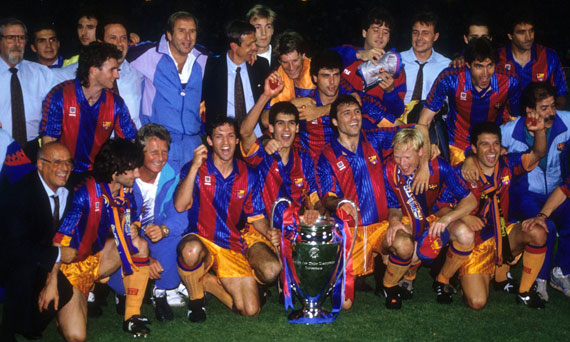Tras la derrota en la final de la Copa de Europa de 1994 frente al A. C. Milan por 4-0 en el Estadio Olímpico de Atenas, se dio por cerrada la era del Dream Team y la situación deportiva del equipo se deterioró hasta el punto de una profunda división social entre partidarios del entrenador, Johan Cruyff y partidarios del presidente, José Luis Núñez. La traumática despedida de Cruyff creó una gran crisis social en el club, que no desapareció pese a los títulos conseguidos por Bobby Robson y Louis van Gaal, y acabó desembocando en la dimisión de José Luis Núñez en el año 2000.
La "Era Guardiola" (2008-2012)
Con la llegada de Pep Guardiola al mando del equipo, el Barcelona pasó a la historia en la temporada 2008/09 tras conseguir el triplete (Liga, Copa y Copa de Europa). Guardiola en su debut en Primera División como entrenador, logró lo que Frank Rijkaard y Johan Cruyff no consiguieron en varios años. Con el triunfo en la final de Roma ante el Manchester United (2-0) el Pep Team consiguió el triplete, siendo el único equipo español en haber logrado tal hazaña, y pasando al selecto círculo de clubes europeos que lo han logrado antes (Celtic, Ajax, PSV y Manchester United).
Además el Barcelona se proclamó campeón de Europa contando entre sus filas con 7 canteranos titulares en la final. El equipo de Pep Guardiola, además de alzarse con los tres principales títulos, logró superar las hazañas del Dream Team en cuanto a cifras conseguidas en Liga, batiendo varios récords de goles, partidos ganados como visitante, etc.
Al inicio de la temporada 2009-10, el equipo ganó la Supercopa de España al imponerse al Athletic Club en ambos partidos. También logró la Supercopa de Europa al ganar al Shakhtar Donetsk por 1-0. El equipo dirigido por Josep Guardiola, tras ganar la Copa Mundial de Clubes a finales de 2009 ante Estudiantes de la Plata por 2-1, pasó definitivamente a la historia del fútbol, al conseguir los 6 títulos oficiales en una misma temporada, una hazaña que no había sido lograda nunca antes por ningún otro club. El Barcelona de Guardiola consiguió en mayo de 2010 su segunda Liga consecutiva, con un total de 99 puntos, cifra que ningún otro club había alcanzado antes.
El Sextete
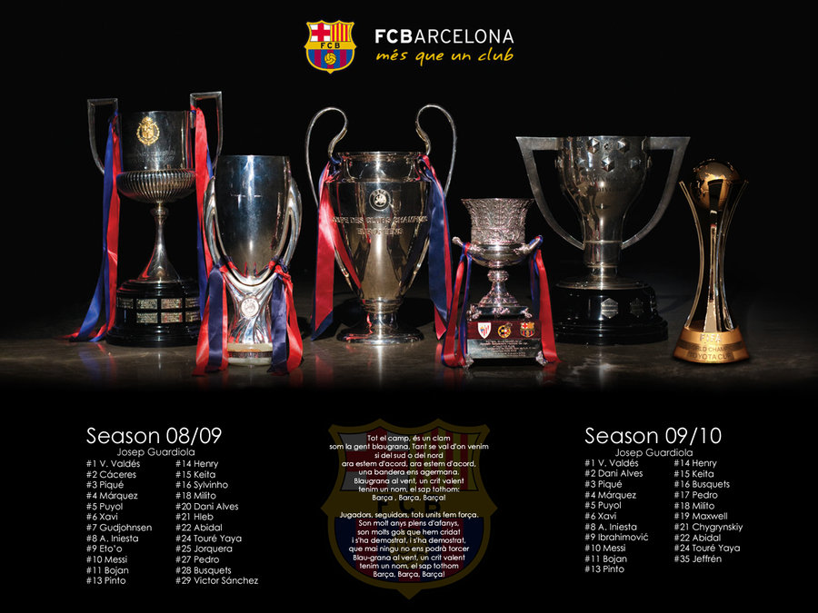 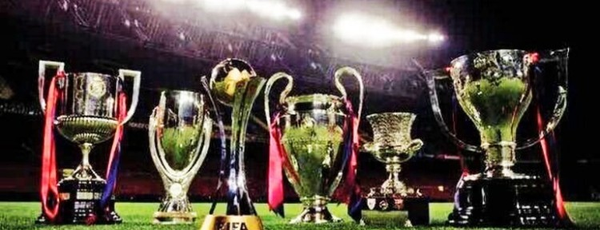 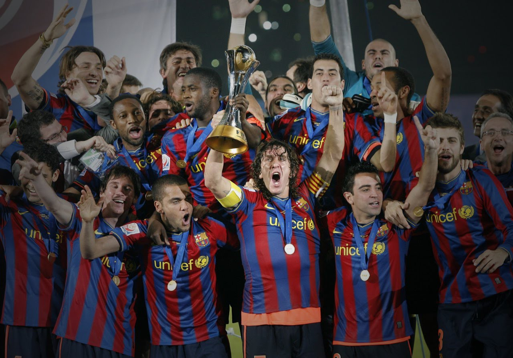 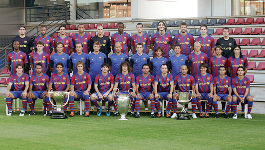Actualidad (2012 - Presente)
La campaña 2012-13 comienza con cambio en el banquillo, el de Tito Vilanova por Josep Guardiola. El equipo mantiene su nivel y logra la mejor primera vuelta de la historia (18 victorias y 1 empate), que se ve empañada por la recaída de Tito Vilanova debido a cáncer a la glándula parótida en diciembre por lo que debe operarse en Nueva York, solo hasta el mes de abril logra reincorporarse al banquillo. La temporada continua con prometedores resultados pero no logran pasar de semifinales en la Copa del Rey y en la Champions, aunque como se preveía durante gran parte del campeonato se proclaman campeones de Liga, igualando el récord histórico de 100 puntos y 115 goles. Tras una temporada en el banquillo, el 19 de julio de 2013 Vilanova decide abandonar el club debido a su cáncer el cual le había aquejado varios meses atrás. En su lugar se contrató a Gerardo Martino.
El 2 de abril de 2014, la FIFA prohíbe al club fichar jugadores hasta junio de 2015, por infracciones relativas a la transferencia internacional y la inscripción de jugadores menores de 18 años. Esta se debería a infracciones graves en 10 fichajes realizados entre el 2009 y el 2013, infringiendo el art. 19 del Reglamento sobre el Estatuto y la Transferencia de Jugadores.El Barça recurrió y la sanción quedó en suspenso, pero posteriormente acabaría siendo confirmada.
Durante la primera mitad de la temporada, el equipo dirigido por Martino mostró unos buenos números, pero al final no lograría conseguir ningún título aparte de la Supercopa de España: El Barcelona fue eliminado por el Atlético de Madrid en cuartos de final de la Liga de Campeones, y unos días después, cayó en la final de la Copa del Rey frente al Real Madrid. El 17 de mayo de 2014, tras perder la Liga en la última jornada, el Tata anuncia su marcha.Dos días después, Luis Enrique asume el puesto.
El Barcelona de Luis Enrique comenzó la Liga obteniendo 7 victorias y un empate (sin conceder un solo gol) en las 8 primeras jornadas, pero perdió el liderato tras dos derrotas consecutivas ante Real Madrid y Celta de Vigo, terminando la primera vuelta en segundo lugar, con un punto de desventaja sobre el Real Madrid. Los métodos de Luis Enrique, con frecuentes rotaciones para dosificar a sus jugadores, lo enfrentaron con parte de la plantilla, más notoriamente con Lionel Messi, e incluso se llegó a plantear el despido del técnico asturiano tras una derrota contra la Real Sociedad.
A partir de ese momento, los números y el juego del equipo catalán mejoraron exponencialmente, clasificándose para la final de la Copa del Rey y de la Champions League y recuperando el liderato en la Liga. El 17 de mayo de 2015, el Barcelona se proclama campeón de Liga, y dos semanas después, también gana la Copa del Rey. El Barça terminó la temporada proclamándose campeón de la Liga de Campeones por quinta vez en su historia, y convirtiéndose así en el único equipo que logra dos tripletes.
 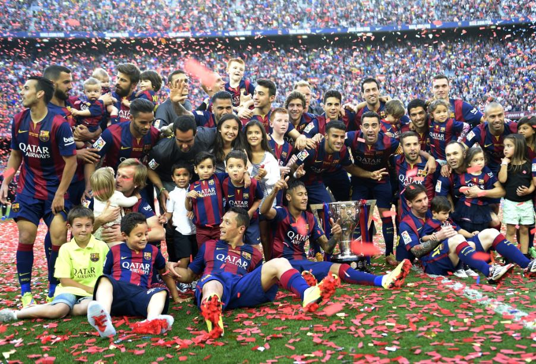
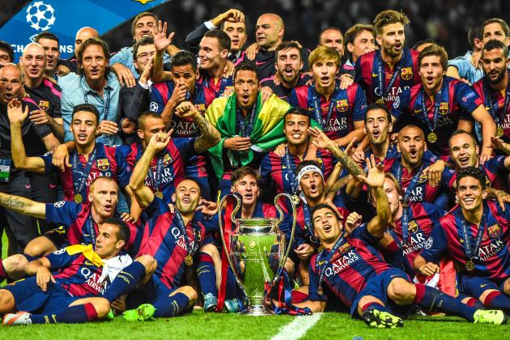
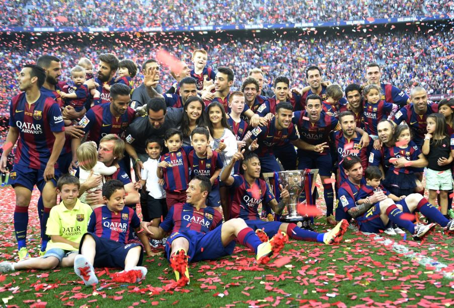
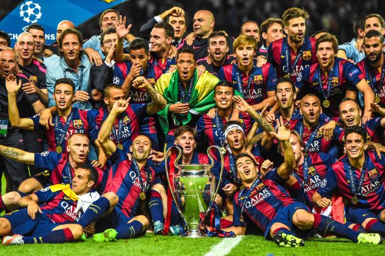
Super Copa de Europa
El 11 de agosto se disputó la Supercopa de Europa en donde el equipo logró el primer trofeo de la temporada y cuarto en el año al vencer al Sevilla, campeón de la Liga Europea 2014-15 por 5-4 con dos goles de Lionel Messi, uno de Rafinha, Suárez y Pedro.
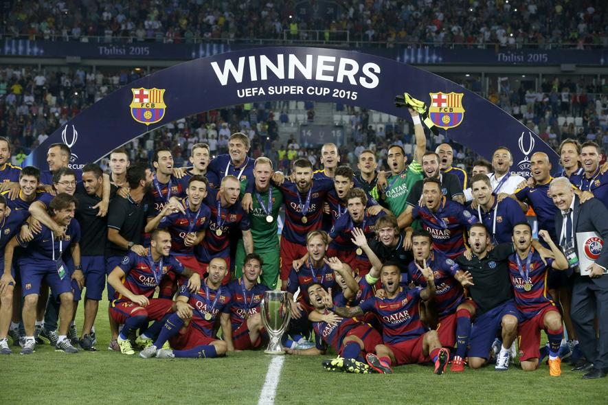Super Copa de España
El 14 de agosto se disputó la Ida de la Supercopa de España ante el Athletic Club con el que se perdió por 4-0. En la vuelta el 17 de agosto, el empate a uno dio el título al equipo bilbaíno.
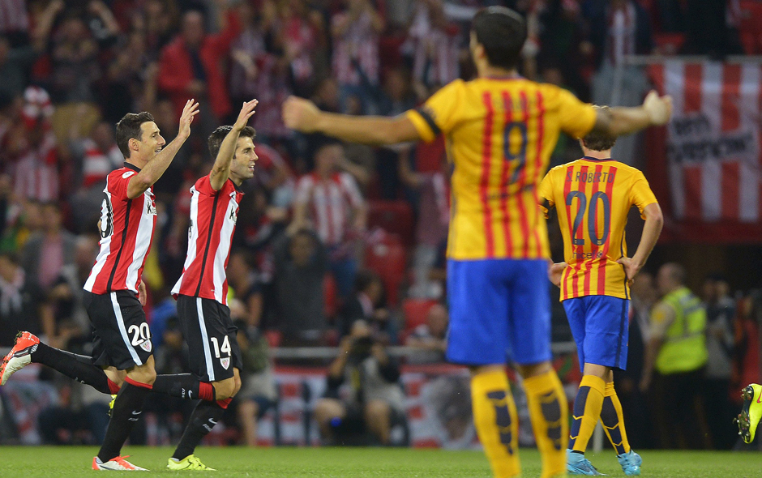Mundial de Clubes
El 17 de diciembre, el Barça se enfrenta al Guangzhou Evergrande entrenado por Luiz Felipe Scolari en semifinal de la Copa del mundo de clubes. Es la primera vez que el Barcelona se enfrenta a un club chino en competición oficial. El resultado es de 3-0 con tripleta de Luis Suárez con lo que pasa a la final de la competición.
El 20 de diciembre el equipo se proclama vencedor de la Copa Mundial de Clubes de la FIFA 2015 por tercera vez en su historia, al vencer 0-3 al River Plate. Los goles de la final fueron de Messi y Luis Suárez